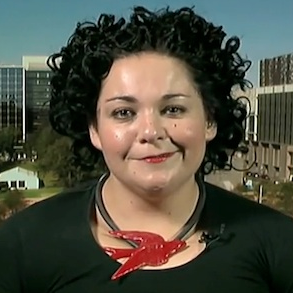

< < < Back
Double Standard: Male Victim Says Men Shouldn’t Walk Alone, No One Yells “Victim Blaming” – Return Of Kings
A victim of an atrocious physical assault, Robbie Stirling, has claimed that men should not walk home alone after nights out. The young man was set upon at the age of 19 and his physical and emotional wounds, including the requirement of grave surgery, continue to impact on his life some four years later. And, surprise, surprise, after he made his strongly-worded call in the British media, none of the usual do-gooders called him a “victim-blamer.”
Stirling’s terrible experiences, first enduring the assault and then recovering from it in the long-term, highlight the intense double standards facing male versus female victims of crime. Whilst no reasonable person is going to say that victims of serious physical assaults or rapes ever deserve their suffering, the fact remains that men are expected to take precautions and women are encouraged to do whatever they wish, even if it results in higher odds of being sexually attacked. And are these higher odds exactly what “rape culture”-obsessed feminists want in order to perpetuate their own lies?
Robbie Stirling should be commended for his commonsense prescription for helping men evade violent attacks. Although he in no way deserved the cruel assault thrown his way, he has offered other men, who receive but a fraction of the sympathy given to females whenever they are attacked, the opportunity to minimize their risk of being harmed. Meanwhile, any constructive advice for women given by those dealing with violent crime on a regular basis, such as police officers, is twisted as “victim-blaming” by feminists.
Examples where you use caution to avoid being a victim of crime or negligence
“Help! The Australian Government is victim-blaming David G. Brown by telling him to take precautions to avoid being mugged or attacked while overseas!”
Robbie Stirling’s astute advice is actually a microcosm of the rituals we engage in every day to stop ourselves losing property or being injured by others with a malicious intent.
For instance, I have traveled extensively, more than my grandparents, parents and most of my siblings combined. I know my way around certain foreign cities better than many of the locals do. Yet I must be aware of my surroundings, both at home and overseas, and be prepared to take sensible precautions to keep myself safe. Otherwise I may end up in the local hospital or, more sinisterly, bleeding out on the street. My experiences,though not foolhardy, have still been adventurous even with these precautions.
Just as I take sensible measures to evade criminals, most of you, because you’re men, do all or some of the following on a regular basis:
- you lock or double-lock the door of your inner city or suburb home to avoid being burgled;
- you lock the door of your car, even in the carpark of a well-protected, electronically monitored apartment complex or hotel, to avoid having it stolen;
- you put your wallet in your pocket when on the street to a) avoid attracting would-be thieves and b) make it harder to steal;
- you avoid the worst neighborhoods in your cities or other metropolitan areas, e.g. the South Side of Chicago;
- you walk home in a group or take a taxi after a night out, just as Robbie Stirling now counsels, to avoid being assaulted;
- you eschew dark alleys or derelict streets when traveling, especially in countries with lower living standards than the West, to avoid being attacked or mugged;
- you use safes or take your valuables with you to avoid having them taken from your hotel room;
- you buy bottled alcoholic beverages on foreign vacations in poorer countries to avoid methanol or ethanol poisoning from illegally manufactured spirits or beer;
- you watch your drinks at nightclubs or bars and, if strangers buy for you, are present when they’re poured, particularly when overseas;
- you look for cars at pedestrian crossings to avoid being mowed down by a driver illegally preoccupied with his or her phone or accelerator; and
- you exchange your money for other currencies at reputable businesses when abroad, not with the guy asking you to meet him round the back or one street over.
Importantly, women do most of these things, too. In the realm of mitigating the risks of sexual assault, however, the tables are turned. Suddenly any recommendation for reducing the risk is perversely called victim-blaming. What utter claptrap.
Contrast commonsense with the absolute nonsense peddled by feminists

Feminist academic Lauren Rosewarne has previously lambasted police for suggesting women should not walk alone in parks, especially at night.
Compare the non-existent personal attacks following Robbie Stirling’s advice for men with the shrill drum-beating of feminists when a woman is attacked or killed and precautions are mentioned…
When a 17-year-old Melbourne schoolgirl, Masa Vukotic, was unforgivably murdered at a time of 7pm last year, a local high-ranking policeman faced the usual but nonetheless unacceptable ad hominem attacks for reminding women of the importance of walking in groups, namely at night.
Vukotic had been alone and was also unable to hear her attacker’s approach due to music from her headphones. This policeman, an Inspector, would have been exposed to hundreds of dead bodies or cases involving dead bodies in his career. Without taking away from the deplorable act of the offender, the Inspector was only seeking to prevent more tragedies, tragedies he has more intimate knowledge about than 99.99% of the general population. Contrary to the implicit expectation of publications like The Guardian, the police simply cannot preempt every terrible murder, physical attack or rape, nor should they be expected to. Bad people have always existed and always will.
One notably vocal dingbat, University of Melbourne academic Lauren Rosewarne, lashed out at the Inspector and police for their “victim-blaming.” Forgetting that police spend 1,000 times more effort solving and responding to crimes than advising the pubic about how to avoid them, Rosewarne said that the conversation needed to be about offenders not committing attacks, as if the 0.1% of people hellbent on rape and murder are going to use some sort of academic or moral tool to evaluate and then reconsider their behavior.
Crime is inexcusable, but it will be overwhelming committed in places where offenders perceive a potential victim is either alone or outside the immediate assistance of the authorities. If people know the hotspot situations of physical attacks or sexual assaults, they empower themselves to steer clear of danger.
The position of feminists on the subject of female self-protection is untenable. On the one hand, they say that “rape culture” exists in a society that supposedly normalizes sexual assault (but when was the last rape you saw in public, unlike the ubiquitous serious assaults in every nightclub precinct?). Yet on the other hand, this pseudo-culture is not ever threatening enough for feminists to encourage women to take reasonable precautions to avoid the very bad individuals whose opportunism makes them prey on those isolated from others in locations like dark parks. The need to preserve the rape culture narrative is why SJWs actively try to prevent the dissemination of helpful advice, similar to Robbie Sterling’s, for women.
We do not live in Pleasantville, nor will we
Violent crime is the lowest it has ever been. That sad, enough bad eggs live amongst us. If a person, male or female, has a choice between taking reasonable precautions to stop themselves from becoming a victim or not taking them, the former course of action always makes the most sense. The plight of Robbie Sterling shows we can offer others ways to escape victimhood without claiming that victims deserve to be attacked.
It is the saddest indictment on feminists today that they will take more precautions to protect their cars (i.e. locking them) than the precautions they advise women to use in avoiding violent crime.
 If you like this article and are concerned about the future of the Western world, check out Roosh's book Free Speech Isn't Free. It gives an inside look to how the globalist establishment is attempting to marginalize masculine men with a leftist agenda that promotes censorship, feminism, and sterility. It also shares key knowledge and tools that you can use to defend yourself against social justice attacks. Click here to learn more about the book. Your support will help maintain our operation.
If you like this article and are concerned about the future of the Western world, check out Roosh's book Free Speech Isn't Free. It gives an inside look to how the globalist establishment is attempting to marginalize masculine men with a leftist agenda that promotes censorship, feminism, and sterility. It also shares key knowledge and tools that you can use to defend yourself against social justice attacks. Click here to learn more about the book. Your support will help maintain our operation.
Read More: British Rotherham Investigator Gets Obscence Payoff For Doing Nothing, Then Plays The Victim Card